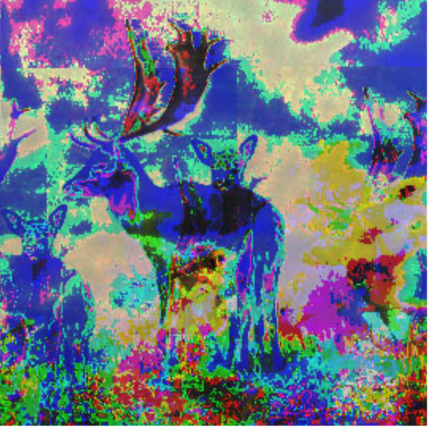

This Image was created for class Art 74 using the software Audacity. Similar to the theme of the text glitched images, "Ambigious Animals", this image focuses on the distortion or mutation of animals. W:1050px H:1000px
